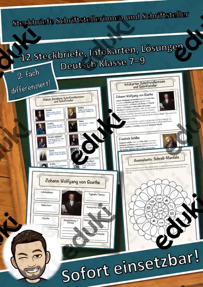

Praktikumsplatz finden & Telefonat mit dem Betrieb – Bewerbung & Praktikum, 3 Stufen, mit Hilfen & Lösungen (Klasse 7–10)
„Praktikumsplatz finden & Telefonat mit dem Betrieb“ – Arbeitsblatt-Set zur Berufsorientierung für Klasse 7–10: ausführlich, dreifach differenziert (★ / ★★ / ★★★) und mit vielen Hilfen, damit alle Schülerinnen und Schüler Schritt für Schritt zum Ziel kommen.
Inhalt (16 Seiten + Deckblatt):
- Sechs Suchwege für einen Praktikumsplatz im Überblick
- Betriebsliste mit Auswahlkriterien (Plan A, B, C)
- Telefonleitfaden in fünf Schritten mit Beispielsätzen
- Wortspeicher und Hilfekarte mit Formulierungsbausteinen
- Zwei Telefonate zum Vergleichen (schwach und gut)
- Fehler-Findeaufgabe: Telefonat mit fünf Fehlern
- Aufgaben in drei Stufen: ordnen, Anzeige auswerten, Dialog schreiben
- Rollenspiel mit Rollenkarten und Beobachtungsbogen
- Notizzettel, Kurztest, Ich-kann-Check, Lösungen, Lehrkraft-Hinweise
Hilfen: Wortspeicher, Formulierungsbausteine, Hilfekarten, Checklisten und Beispiele zum Vergleichen – dazu Kurztest mit 12 Punkten und Notenschlüssel, Ich-kann-Check und vollständige Musterlösungen.
Lehrplanbezug (Auswahl, bitte mit dem Lehrplan Ihres Bundeslandes abgleichen):
- Berufliche Orientierung (KMK-Empfehlung): Praxiserfahrungen vorbereiten, Betriebe erkunden
- AWT / Arbeit-Wirtschaft-Technik / Arbeitslehre (Sek I): Praktikum suchen, Betriebe kontaktieren
- Deutsch: Sprechen – situationsangemessen telefonieren, Gesprächsregeln, Notizen anfertigen
Einsatz: AWT / Berufsorientierung / Arbeit-Wirtschaft-Technik / Wirtschaft und Beruf / Deutsch, Klasse 7–10, Mittelschule, Realschule, Gesamtschule, Gymnasium, Einstieg in die Berufsschule, Vertretungsstunde, Wochenplan, Praktikumsvorbereitung. Die Lehrkraft-Seite enthält Stundenvorschlag und Differenzierungshinweise.
Teil der Reihe „Bewerbung & Praktikum“ (19 Einheiten von der Berufswahl über Praktikum, Anschreiben, Lebenslauf und Vorstellungsgespräch bis zum Ausbildungsvertrag) – in Themenpaketen und im Gesamtpaket deutlich günstiger.
Alle Beispiele sind frei erfunden (keine realen Personen, Firmen oder Marken). Icons aus Noto Emoji (SIL Open Font License), keine Fotos. Texte, Aufgaben und Layout eigene Erstellung; mit KI-Unterstützung erstellt und geprüft.
Viel Erfolg bei der Berufswahl wünscht Snice! :)
Ähnliche Materialien

Arbeitsschutz & Jugendarbeitsschutzgesetz – Bewerbung & Praktikum, 3 Stufen, mit Hilfen & Lösungen (Klasse 7–10)

Bewerbung um einen Praktikumsplatz – Bewerbung & Praktikum, 3 Stufen, mit Hilfen & Lösungen (Klasse 7–10)

Berufswahl: Interessen & Stärken-Check – Bewerbung & Praktikum, 3 Stufen, mit Hilfen & Lösungen (Klasse 7–10)

Steckbriefe Schriftstellerinnen und Schriftsteller – Materialpaket (12 Autoren der Literaturgeschichte, differenziert, mit Lösungen)

Steckbriefe Erfinder und Erfindungen – Materialpaket (12 Erfinder, differenziert, mit Lösungen)